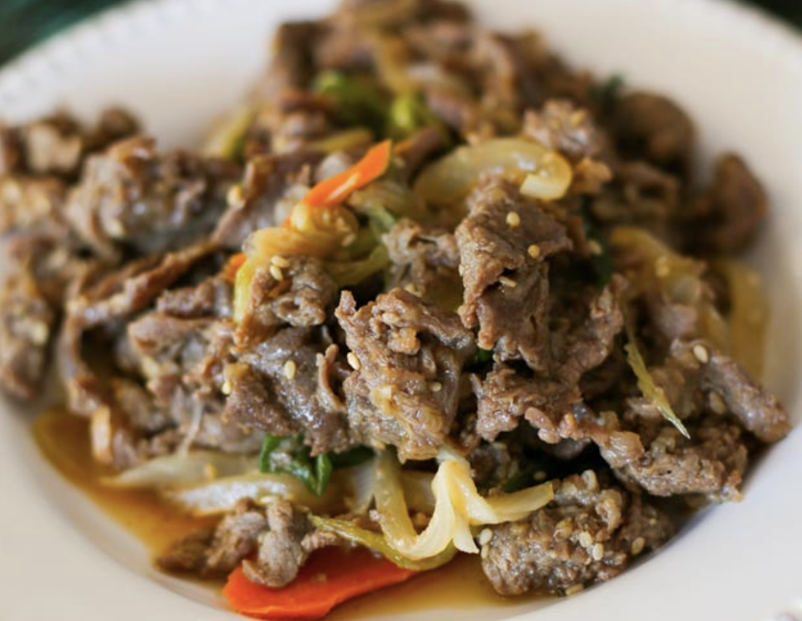

Bulgogi, literally "fire meat", is a gui (Korean-style grilled or roasted dish) made of thin, marinated slices of beef or pork grilled on a barbecue or on a stove-top griddle. It is also often stir-fried in a pan in home cooking.

1. Remove the blood from the meat with kitchen paper. (This can be done by placing the kitchen paper on the cutting board. Then put one slice of meat and layer another piece of kitchen paper on top of the meat. Gently press it down to soak up the blood.) Place the meat into a large mixing bowl for marinating.
2. Pour the marinade sauce into the bowl and mix well with the meat. Add the sesame oil and gently mix it into the meat. (I prefer adding the sesame oil separately as opposed to mixing it in the marinade sauce. I read somewhere that the oil can prevent the other sauce getting absorbed effectively into the meat.) Cover the bowl with food wrap (or move the meat into a glass container with a lid) and marinate the meat for at least 4 hours in the fridge. (If you have more time, you can also marinate it overnight for an enhanced flavour).
3. Prepare the vegetables. Thinly slice the onion, carrots and green onion.
4. Preheat the wok/skillet on the stove on medium high heat and once heated add the cooking oil and spread it well with a spatula.
5. Add the meat and vegetables and stir. Cook them on high heat for 3 to 5 mins until the meat is starting to turn brown. Stir occasionally (every 30 seconds) and reduce the heat gradually as the meat & vegetables cook.
6. When the meat is nearly cooked toss in the sesame seeds. By now the heat should be very low. Stir them quickly and turn off the heat.